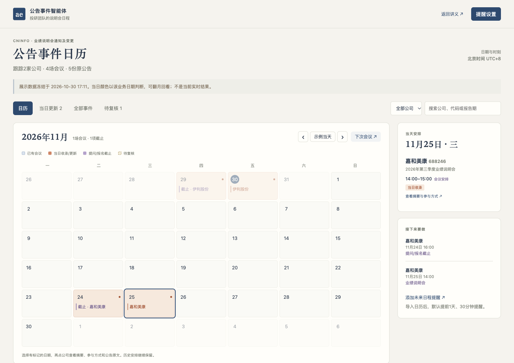

第三讲 · 从巨潮公告到事件日历
从零搭建公告事件智能体
从巨潮公告出发，做出能按日历安排参会、查看摘要、设置提醒并持续更新的公告事件产品。
一家金融企业的投研团队需要安排业绩说明会、提前准备问题。通知散在公告里，改期又会另发一份。研究员真正需要的是知道哪天有哪家公司、何时准备问题、怎样参加，并在事前收到提醒。我们希望让智能体自己取回公告、保留依据、按时更新，再把结果放进一个每天能用的事件日历。
这一讲请你代入业务需求方，用自己的编程Agent从空目录开始搭建。先聊清需求，做出第一小步，检查它留下的文件和网页，再带着具体问题继续修改。最后交付的是一个公告事件智能体，以及可以展示和检查它工作的产品页面。
从自己的新目录开始。原公告由Agent取得，验证材料与教师参考按进度另行使用。
先看成品：公告事件日历
打开公告事件智能体展示产品，先用日历完成一次参会安排：选日期、看公司、打开事件摘要，再查看参与入口和公告原文。点击“下次会议”可跳到嘉和美康11月25日，11月24日另有提问截止标记。

先看哪天有安排
有会议的日期与空白日期颜色不同。今天收录或发生更新的安排突出显示，以前的记录继续保留；按公司搜索或翻月查看。
再看公司和摘要
点击日期看公司，再点公司看整场起止时间、提问/报名截止、参与入口与原公告。改期与冲突直接出现在这场会议的详情中。
把安排加入提醒
下载未来会议及已确认截止的日历文件，导入自己的日历。文件含提前1天、30分钟的提醒；不确定字段不生成提醒。
示例取自2026年10月30日真实运行，保留5份原公告、4场会议和1项截止冲突。展示版将日期固定在这一轮，图例中的“当日”指示例日期；自己的实时产品按北京时间判断“今天”。首次回看的旧公告标为历史建档，当天披露并收录、后续新发现、安排变更和提取校正分别说明。不能为展示两种颜色虚构旧收录日期。
成品由后台Agent和前台日历组成。后台定时查询、下载、提取、核验和更新；前台供研究员安排参会。运行编号、来源覆盖等检查信息放在下方辅助入口。
日历文件是导入时的快照，不是自动订阅。导入后核对两条提醒，并确认日历应用允许通知。公告改期或取消后，需要检查并更新已导入的旧提醒。后台每天取数与个人日历提醒是两个环节，分别验收。
动手之前，先看整体步骤
下面六项是智能体运行时做的事。后面的第0至8步，是你和编程Agent把它搭出来的顺序。
- 系统任务按计划启动
到约定时间自动执行，留下本轮编号与开始时间。
- 程序查询与保存公告
核对公司身份，查全约定窗口，保存原始响应和PDF。
- 模型识别并提取事件
判断是否属于说明会通知，提取时间、报告期和原文。
- 程序＋业务方检查字段与证据
程序查格式、页码和引文，业务方抽查原PDF及矛盾。
- 程序维护同一场会议
去重、关联变更，保留历史及待复核字段。
- 产品页面更新日历与提醒
标出会议日和截止日，提供摘要、原文和可导入的提醒。
你使用的编程Agent
任选能读写项目并运行程序的工具。它负责搭建和修改，下文的短需求与反馈都发给它。
你做出的公告事件Agent
是本机独立运行的程序，负责查询、更新和定时执行。日常运行不需要编程Agent一直留在对话中。更新后的网页和日历提醒文件使用同一批已核验字段。
程序调用的提取模型
通过自己的硅基流动账号使用。先试4B，再根据同一标准比较9B、27B，和编码模型分别配置。
本次实测选择固定步骤配合模型提取。模型负责分类和读原文，程序掌握查询覆盖、状态提交与停止条件。是否再加规划器，可以在完成主线后用实测比较。
开始前：准备项目、材料与账号
先认识材料包
打开自己的新项目
准备一个空项目
新建英文文件夹，例如
announcement-agent，用你选好的编程Agent打开。下载起步材料包后把两份小文件放进去，也可以直接从空目录开始。起步包只有短业务说明、公司身份和来源网址，原公告由你的Agent实际查询和下载。确认编程Agent能工作
确认它能在这个文件夹里创建文件、运行程序和读取网页。若只给方案不实际操作，检查当前是否处于允许编辑和执行的模式。Python、PDF读取工具和其他最小依赖可以由它按本机环境检查、安装并说明。
准备自己的硅基流动账号
准备程序可用的API Key，在硅基流动控制台检查自己的模型和可用额度。让编程Agent指导你使用用户级配置或隐藏输入，不把密钥放进代码、网页、共享聊天或材料包。编码模型能聊天，不等于生成的程序已经获得同一项授权。
确认能访问巨潮
打开巨潮资讯，试着查找伊利股份600887、嘉和美康688246，并打开一份原始PDF。课前只确认来源可访问，不把预先下载好的公告当成这次Agent已经会取数。
先看每步目标，再发送适合自己进度的短需求。等Agent实际做完，打开文件或网页，对照“应该看到”和“确认后再继续”。如果有问题，指出具体记录、原文或运行结果，再用折叠的反馈例子继续。
首节按约90分钟安排，优先完成真实取数和可靠的手动产品。去重、变更与真实定时触发可以续讲，全部验收后才算完成这一主题。当前已做过独立Agent从零搭建模拟，还没有真人教师在90分钟内完成全程的试讲证据。
从需求出发，确定第一小步
先让Agent理解业务用途和完成标准，再开始写程序。
现在怎么做
- 在自己的新项目中描述投研团队的日常工作。
- 回答Agent对公司、范围、频率、时区和结果入口的追问。
- 请它先做最小一部分，并检查本机运行条件。
我们投研团队要跟踪伊利和嘉和美康的业绩说明会，安排参会和准备问题。想做一个会定时查巨潮、更新事件日历的助手，让我们看公司摘要、原公告并安排提醒。先和我聊清楚需求。
AI可能询问覆盖公司、哪些公告算目标、回看多久、在哪台电脑运行、日历怎样展示、提醒怎样送达。试点可以这样回答：
先做伊利股份600887、嘉和美康688246，只看业绩说明会召开通知及变更。首次回看90天，结果放在本机网页。按北京时间周一至周五08:30检查。
周一至周五不是交易日历。业务时间也要和电脑本地时间区分，这里的08:30北京时间对应日本时间09:30。提醒先用页面待办和日历文件导入，默认提前1天、30分钟。首次回看的旧记录和后续新更新要区分；邮件、飞书或自动订阅可在主线后另做。
应该看到
- 一份简短需求记录，写清服务对象、公司身份、公告范围、频率、时区和产品入口。
- 最小搭建顺序，以及当前环境缺什么、怎样补齐。
确认后再继续
- 你能复述这个Agent每天做什么、去哪里看结果。
- Agent准备先实际做出一小步，未把设计文档当成成品。
自己的需求记录、环境检查结果和下一小步。文件名可由你的Agent决定。
本步没做好？看反馈例子
先缩小范围。只把两家公司查对，列出公告并让我打开原文。等来源通过，再加提取、日历和定时功能。
让Agent从巨潮自己取回公告
让第一条结果从真实查询开始，并能回到原文。
现在怎么做
- 让Agent实际查询两家公司最近90天的候选公告。
- 核对公司代码、标题、发布时间和链接。
- 打开至少一份下载的PDF，再看分页与覆盖记录。
请现在实际查巨潮，列出这两家公司最近90天的候选公告。保留查询条件、每页结果和原PDF，让我能核对公司与来源。查询失败要明说。
程序可以使用网站实际提供的查询请求。让Agent说明怎样确认结果已取全，例如是否读到最后一页、总量是否一致、日期条件是否生效。
应该看到
- 两家公司各有查询成功或失败记录，原始响应和PDF已经保存。
- 公告列表可以打开原文，代码、名称和标题相符。
确认后再继续
- 没有用搜索摘要替代公告正文。
- 空结果、请求失败和分页未完成有不同状态。
- 能说明查询覆盖了哪些公司、日期和关键词。
参考实现使用“业绩说明会”关键词，完整性只覆盖约定查询条件。若要覆盖不含该词的变更标题，需要另做召回检查。2026年10月30日的首次窗口取得伊利2份、嘉和3份目标PDF，这只是当次复核数量。
查询条件与响应、候选公告目录、原PDF及文件指纹。
本步没做好？看反馈例子
先给我看这次请求和实际返回，区分没有符合条件的公告和没有查成功。先查清原因，保留已有记录。
先做一个能操作的日历产品
从第一批真实来源做出日历骨架，尽早检查产品的使用顺序。
现在怎么做
- 让Agent搭一个可以翻月、选择日期的本机日历。
- 把刚取得的真实公告先放在待提取区域，确认公司和原文能打开。
- 确认“日期→公司→摘要→原文”的操作顺序，尚未提取日期的公告不能填入某一天。
先做一个能翻月、点日期看公司的事件日历，再点公司看摘要和原公告。刚取回的公告还没提取日期，就放在待提取区，不要编日期。做好后打开让我试。
应该看到
- 浏览器已有自己的日历，翻月和日期选择可用。
- 真实公告的公司、标题和原文入口可查看，未完成字段有明确空状态。
确认后再继续
- 页面显示的公告与第1步保存的来源一致。
- 没有虚假的运行进度、编造日期或不能工作的“开始运行”按钮。
- 日历日期、当天公司列表和事件摘要有明确位置；电脑和手机均能操作。
可操作的日历骨架、真实来源列表和本机启动说明，后面继续扩展同一产品。
本步没做好？看反馈例子
现在只有结果表，还不像日历产品。请让我能翻月、选日期、点公司开详情；未知日期仍留待提取，原文入口先接通。
用4B提取，再逐条对照原文
先检查一条提取能否站得住，再扩大到多份公告。
现在怎么做
- 让Agent读一份完整PDF，按物理页保存文本。
- 使用自己账号可用的4B模型提取，保留原始回答。
- 打开PDF，核对日期属于会议、提问截止还是公告发布。
先用硅基流动的Qwen 4B提取一份公告：会议日期、整场起止时间、提问截止、参与方式和报告期。日期要附页码与连续原文；没写的留空，保存模型原始回答。
本次实测使用Qwen/Qwen3.5-4B、Qwen/Qwen3.5-9B和Qwen/Qwen3.8-27B。让Agent先核对你账号当时可用的模型目录，记录请求与实际返回的模型ID。这里通过API使用托管模型，27B表示参数规模。
应该看到
- PDF、逐页文本、原始模型回答和核验结果能对应起来。
- 一条有来源的会议进入对应日历日期，点开能看摘要、时间、参与入口和原公告；未通过字段留待复核。
- 每次模型调用有版本、用量和失败记录，用量缺失时标未知。
确认后再继续
- 整场会议的时段正确，没有只取其中一个环节。
- 引文能在所标页连续找到，没有用省略号拼接。
- 省略年份有可核验上下文，不能给日期随意补年。
- PDF不可读时明确停下，没有让模型补造内容。
- 摘要来自已核验字段。只有一个网址时，不能凭域名编造直播、报名或登录方式。
原始提取、字段证据、程序核验结果与产品中的第一条可靠记录。
本步没做好？看反馈例子
这段引文在原页找不到。保留原来的失败，只修这份公告，引用同一页连续出现的文字，不要拼接。重跑后展示原始回答和逐字核对结果。 这里把提问截止当成会议日期了。请分别指出两处原文，程序也要检查日期属于哪个句子，不能只看同页出现过这个日期。
加入独立标准，再决定怎样换模型
用同一组原文检查改进效果，让模型选择有依据。
现在怎么做
- 保留第一轮原始输出，再打开独立验证包。
- 抽查召开通知、改期、无时刻与排除样本，确认候选标准。
- 先定位错字段或错证据，再修改要求、比较9B和27B。
加一组独立核验的公告，检查刚才的提取。先别把答案给提取模型。逐条比较原始输出，列出错字段、错引文和没返回的记录，再决定怎么改。
验证包有12份PDF、35物理页，候选标准经独立读源与交叉核对，仍需任课教师签认。其中其他公司用于模板和排除测试，不扩大实时覆盖范围。check_gold.py接受每行{id,result}的原始输出，比较12个关键字段，并检查来源与连续引文。字段名不同可以做保留原值的格式转换，缺字段仍算失败。
应该看到
- 逐条差异报告、失败原答和本次修改。
- 模型、提示词与用量分别记录，人工修订另存。
- 保持同一标准比较后的选择，而不是只说“大模型更好”。
确认后再继续
- 候选标准已由老师抽查，答案没有进入提取请求。
- 没有把手工改答案计为模型通过，也没有放宽标准消除失败。
- 12份关键字段与证据全部通过，并抽查原PDF后，再进入可靠的事件更新。
本次11份同批材料的改进版复测中，4B、9B、27B分别有7、9、11份同时通过字段与证据检查，因此参考实现选27B。改进版看过初版错误，属于同批复测。当天新取得、未参与提示词调整的嘉和三季度通知也单独通过了27B核对。这些是小样本结果，你要按自己版本的实际成绩选择。
验证包同时含原文和答案，隔离依赖分目录与操作约定，不是权限隔离。检查实际送入模型的内容。单份公告提取全对，合并多份公告时仍可能出现冲突。
独立测试报告、各轮原始输出、实际模型与用量，以及采用当前配置的理由。
本步没做好？看反馈例子
4B这批还有错误。保持同一批原文和验收要求，先比较9B；仍不过再试27B。保留每轮原答、错误和用量，不靠改答案或放宽标准算通过。
把通知和改期维护成同一事件
让日历持续维护会议，保留前后变化及来源，再用已确认字段生成提醒。
现在怎么做
- 将原通知与明确引用它的变更公告关联起来。
- 检查改期是否仍为同一个事件，并查看原安排与新安排。
- 在产品中核对冲突字段、延期与已过日期的显示。
- 为未来会议和已确认截止加入可下载、可导入的提醒。
把这些公告维护成会议事件。改期后更新同一场会，保留前后安排与两份来源。没有明确关联依据就先待复核，不要猜。
用嘉和半年度的两份公告核对，原通知安排9月16日14:00至15:00，变更为9月17日同一时段。会议日期不能成为事件身份，否则改期会多出一场会。
确认事件和来源后，再加入提醒：
给未来会议和确定的提问/报名截止加“添加到我的日历”。实际下载日历文件，默认提前1天、30分钟提醒；冲突、取消和日期待定的字段不要生成确定提醒，说明改期后旧提醒怎样处理。
应该看到
- 日历中仍是一场会议，能打开原通知和变更。
- 变更视图保留前后时间，待复核字段有独立说明。
- 已过日期、未来安排、取消及延期状态可以区分。
- 提醒按钮确实生成日历文件，带公司、时间、参与入口和原公告；产品说明这是导入快照。
确认后再继续
- 改期有明确原公告号或其他可核验关联，未凭相似标题覆盖。
- 日期已过不自动解释为实际已召开。
- 延期但无新日期时，不继续把旧时间当作有效未来安排。
- 截止冲突只阻止该截止的提醒，不妨碍已确认的会议。未关联变更或来源冲突时，先复核受影响旧安排。
嘉和变更公告的提问截止段落发生了变化，却又写其他内容不变。参考实现保留旧值和新候选待核验。独立从零模拟的首版漏掉这个冲突，需求方指出后才修正；可见提取正确和程序运行成功，仍需要业务方检查。
稳定事件记录、变更历史、原始来源、可导入提醒，以及日历详情中的前后值和待复核说明。
本步没做好？看反馈例子
这里的提问截止和“其他内容不变”有冲突。把旧值、新候选与原文并排给我，先待复核。会议改期可以更新，但不要顺手覆盖所有字段。
重跑和故障演练，检查它会不会越跑越乱
用重复与失败场景，检查事件和产品状态是否可靠。
现在怎么做
- 用同一来源再跑一次，对照会议数量、事件身份和更新时间。
- 在独立测试目录模拟隔天重跑、仅待复核内容变化和一家公司失败。
- 恢复后继续处理，并从日历打开旧日期检查历史记录。
同一来源重跑后，会议不能重复，更新时间和颜色也不能刷新。再在测试目录模拟隔天重跑和一家公司失败，检查旧记录、历史颜色和失败状态；仅复核内容变化也要能看见。
应该看到
- 重跑没有重复建会，来源不变的提取可复用，事件更新时间不随检查时间刷新。
- 新收录/更新使用醒目颜色，隔天转为已有记录颜色。首次回看的旧公告标为历史建档，提取校正单独标识。
- 失败显示为检查不完整，旧记录和失败原因都能查看。
- 修复后可以续跑，产品不会因局部失败被清空。
确认后再继续
- 没有推进失败公司的成功时间。
- 查询失败、正文不可读、模型超时和预算耗尽都没有被写成无新增。
- 公告发布日期、智能体收录/更新时间和最近检查时间分别记录；旧记录缺时间时标未知，不用当前扫描时间补造。
- 模型或提示词修订没有被说成公司刚刚改期，仅疑点变化也能显示更新。
- 故障材料明确标为模拟，与实时工作区分开。
备课曾遇到一次90秒模型超时，失败保留，恢复后补做未完成部分。网络错误可以有限重试；字段错误需要改要求、换模型或复核，不能无限重试到碰巧答对。
重复运行对照、故障与恢复记录，以及产品中可区分的成功、失败、待复核状态。
本步没做好？看反馈例子
先判断失败在取数、正文、模型服务还是证据。说明会重做哪部分，保留失败和旧结果。不要把历史测试结果当成实时成功。
接上系统定时任务，等它真的启动
把已经验收的同一入口交给系统按计划运行。
现在怎么做
- 确认手动流程和故障检查通过，再安装本机持续任务。
- 说明业务时区、休眠、离线和重复启动的处理。
- 安排一次约90秒后的真实触发，等待系统自行启动。
把刚验收的同一个入口设成持续任务，按北京时间周一至周五08:30执行。说明休眠、离线和重复启动时怎么办，给我查看状态、暂停和恢复的方法。 再安排一次约90秒后的测试。现在不要手动运行业务程序，等系统启动。结束后给我计划时间、实际开始结束、运行编号和新结果，并证明日常计划仍保留。
应该看到
- 持续配置已经保存，系统实际触发查询至产品更新的完整流程。
- 日历使用本次真实运行的结果，后台记录有开始、结束和运行编号；未变化事件保留原更新时间。
- 暂停与恢复有明确入口，操作后能读取实际状态。
确认后再继续
- 没有用注册成功、计划截图或手动运行代替系统触发。
- 后台能读取凭据和项目，查询与提取都走实际入口。
- 执行完成与业务待复核分别显示。
参考实机验证使用macOS，系统每分钟唤起检查器，按北京时间判断是否到期；暂停阻止新业务运行，当前运行继续。电脑开机且用户登录时工作，醒来仅补当天到时的工作日任务，不补过去日期。Windows适配只有生成与模拟检查，需在自己的机器重做验收。
持续配置、真实系统触发回执、产品结果和暂停恢复说明。
本步没做好？看反馈例子
先检查系统实际启动了哪个入口、后台是否能读到配置，给我看失败原因。修复后再等一次真实触发，不要改成手动运行来证明成功。
按产品和实际运行验收自己的Agent
亲自使用产品，检查它是否完成了最初的投研任务。
现在怎么做
- 从月历点日期、选公司、看摘要和原公告，再搜索、翻月回看。
- 下载一场未来会议及已确认截止的日历文件，导入自己的测试日历，核对时间和两条提醒。
- 用改期、取消与冲突场景检查提醒，再对照下表验收后台和产品。
按需求验收日历产品：点日期看公司，再看摘要、参与入口和原文。下载并检查未来会议及确定截止的提醒，默认提前1天、30分钟；检查改期、取消、冲突和真实定时记录，逐项给证据。
应该看到
- 可操作的公告事件日历，颜色、日期、公司、摘要和原文形成完整使用路径。
- 提醒文件含公司、准确时区、参与入口和两条提醒，冲突字段不进入确定提醒。导入后在自己的日历核对；未实测通知送达就不宣称已经收到提醒。
- 从真实查询到事件更新的同一套程序和状态。
- 另一位老师能根据说明打开产品、查最近一次运行、暂停与恢复。
确认后再继续
- 每个页面中的值都有来源，没有用人工排版冒充自动结果。
- 程序失败不会被写成无新增，未确认信息不会被写成已确认。
- 改期仍是同一事件，取消和待定安排不生成旧时间提醒。导入快照不会自动撤回个人日历中的旧提醒，产品有明确操作提示。
- 验收不只依赖Agent一句“已完成”，证据已经实际打开检查。
最终验收
| 验收项目 | 通过时应看到 |
|---|---|
| 需求 | 公司、公告范围、频率、业务时区、电脑和产品入口明确 |
| 自主取数 | 两家公司真实请求、分页覆盖、响应、原PDF和指纹 |
| 模型质量 | 12份独立候选标准的原始字段与证据通过，教师抽查 |
| 事件更新 | 改期仍为同一场会，前后值与来源保留，疑点可见 |
| 重复与失败 | 重跑无重复，失败保留旧记录并报不完整，恢复可续跑 |
| 日历产品 | 有会议日期着色；今天收录/更新与已有记录可分；日期→公司→摘要→参与入口→原公告可操作 |
| 更新语义 | 发布、收录/更新、检查时间分别记录；隔天重跑不重新标新；旧记录保留，提取校正不冒充公司变更 |
| 提醒 | 未来会议及确定截止可导出导入，时间与提前1天/30分钟提醒正确；冲突、取消、待定不生成错误提醒；改期后核对旧提醒 |
| 自主执行 | 持续配置、一次真实系统触发、开始结束和产出齐全 |
| 维护 | 状态、错误、启动、暂停、恢复与凭据配置说明可用 |
业务需要人判断时，Agent可以执行完成并返回待复核，但必须指出具体字段和证据。参考示例中的提问截止冲突仍然保留，未假装所有信息都已确认。
自己的日历产品入口、代码、需求记录、提醒文件及核对记录、验收证据和使用说明。
本步没做好？看反馈例子
请按验收表检查我的实际版本，先修会影响日期、来源和自主运行的问题。没有证据的项继续标未完成，别为了交付把状态改成通过。
完成主线后，再比较流程和模型
开放任务可能需要模型自主找补充证据。可以在自己的稳定版本上比较固定与灵活流程：
这件事适合固定步骤，还是需要模型自己规划？请用同一批来源做小比较，说明多了哪些调用、解决了什么问题，再给建议。
本次规划器首版曾在仍有5份公告时要求结束，程序拒绝。补上明确可选动作和失败反馈后，它完成了相同4场会议，用5次提取和额外8次规划调用，仍有同一项截止冲突。固定流程因此成为主线。各轮缓存与服务延迟不同，不能把耗时差直接归因于流程。
模型也可以继续测试，但每次保留输入、版本、原始输出和成本。独立从零模拟中，第一次换27B后仍有两份省略号引文失败，针对具体问题再反馈，才通过原文检查。更大的模型也需要被检查。
若要让改期自动同步到个人日历，需要另建可访问的订阅源并测试客户端刷新、取消与提醒行为。当前主线只交付导入快照，不能把后台每日更新描述为个人日历自动同步。
卡住时，怎样继续提问
把问题缩到一个实际记录。告诉Agent你看到什么、原文是什么、这一步应得到什么，再请它说明原因和只需重做的部分。
我卡在第几步。这是实际文件或页面，这条记录与原文不一致。先解释问题属于哪一层，保留已有结果，只修相关部分；修好后重新给我证据。
需要恢复教师参考时，先保存自己的项目、说明为什么恢复及从哪里继续。不要把恢复后的成品说成自己从空目录完成的过程。
教师参考、实测与来源
- 完整实测报告：来源、模型评分、固定与灵活流程、从零模拟、真实调度及限制。
- 教师参考实现：本地Agent、产品生成、测试和配置，无密钥或私人运行日志。
- 验证材料包：12份测试PDF、来源与候选标准，首次提取后使用。
- 巨潮资讯：公告来源，具体原文入口随产品和验证材料保存。
- 硅基流动接口说明：模型请求与返回用量；可用模型以自己账号当时目录为准。
原始失败、评分和调度记录按各自轮次保留。模型成绩是小样本试验，候选标准待教师签认；真人计时试讲、Windows实机及长期无人值守可靠性仍未证明。